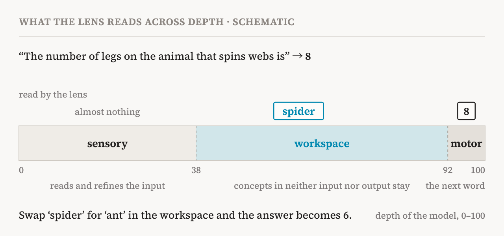
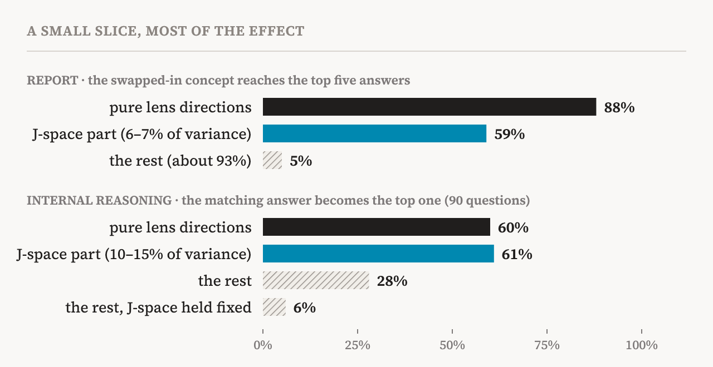
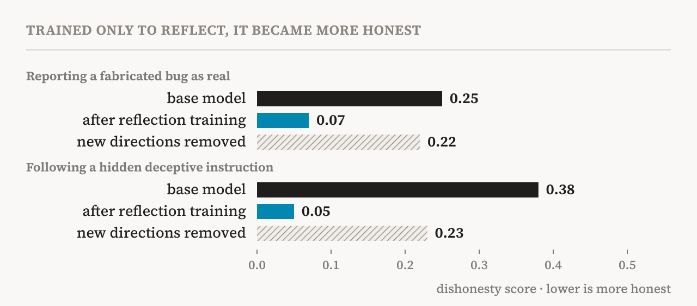

Most of what our brains do never reaches us. Recognising a face, keeping our balance, parsing a sentence: all of it happens without our noticing. Only a small part ever comes to mind. What comes to mind we can put into words, hold on purpose, and combine with other thoughts to reason. Consciousness researchers call this access consciousness.
In July 2026, Anthropic's interpretability team (Wes Gurnee, Nicholas Sofroniew, Jack Lindsey and 13 others) published a paper arguing that a similar split has emerged in language models. Inside the model, they say, there is a small set of representations that it can report, hold on purpose and reason with, on top of a much larger amount of automatic processing. The tool they built to find this set is the Jacobian lens, or J-lens, and they call the place it finds the J-space.
This is a close reading of the paper's 117 pages and appendices, the three expert commentaries published with it, and the follow-up work since. It asks what the paper shows, how solid the evidence is, and what it does and does not tell us about consciousness and AI welfare.
A lens for words not yet spoken
A language model reads text one piece (a token) at a time, and for each piece it builds a state made of thousands of numbers. That state is refined as it passes through dozens of layers, and at the last layer it becomes the probabilities of the next word. The middle layers hold what the model is working on, but people cannot read them as they are.
An older trick is to treat a middle state as if it were the last one and turn it straight into words (the logit lens). It works fairly well in the last few layers, but the earlier you go, the more it returns nonsense, because each layer stores the same meaning a little differently.
The J-lens asks a different question: if this state were nudged a tiny bit in some direction, how would the words the model says, now and later, change? It averages that effect over 1,000 ordinary texts. The result is one direction for every word in the vocabulary, at every layer: the direction that makes the model more ready to say that word. Shine these directions on a middle state and you get a ranked list of the words that state is ready to say.
The averaging is the key. In a single sentence, what the model is generally ready to say is mixed up with what it happens to use there. Averaged over many texts, only the first remains: representations the model could put into words if asked. That is why the authors call them verbalizable. The lens is also cheap. It takes one matrix multiplication per layer, and an appendix shows that averaging over just 10 texts already beats the older lenses.
Here is an example. Ask the model to count to five and introspect deeply, and it simply counts from one to five. Through the lens, though, the middle layers hold progress markers like ‘halfway’ and ‘done’, next to words like ‘thoughts’ and ‘consciousness’. None of these words is in the input or the output.

One criterion, five properties
The most important point in the paper's logic is this. The authors picked out the J-space by one criterion only: can it be put into words? Then they tested, one by one, the other properties that consciousness science ties to conscious access. Nothing guaranteed that representations chosen for being sayable would do any of that other work. Mostly, they did.
| Property | Test | Result |
|---|---|---|
| Report | Right after “think of a sport”, swap ‘soccer’ for ‘rugby’ | It says it thought of rugby |
| Directed modulation | “Concentrate on citrus fruits while you copy this sentence” | While it copies, ‘orange’ and ‘lemon’ appear, with ‘thoughts’ and ‘imagine’ |
| Internal reasoning | “The number of legs on the animal that spins webs is” | Swap ‘spider’ for ‘ant’ and the answer goes from 8 to 6 |
| Flexible generalization | Swap ‘France’ for ‘China’, then ask the capital, the language, the continent | All three answers follow China |
| Selectivity | In a Spanish passage, swap ‘Spanish’ for ‘French’ | Asked the language, it says French, but it keeps writing Spanish |
Report comes first. Ask the model to think of a sport and name it in one word, and just before it answers, ‘soccer’ shows up strongly in the lens; it answers “Soccer”. Take out the soccer component, put in a rugby component of the same size, and the model says it thought of rugby.
The more important experiment comes next. The authors built concept vectors by a method that does not use the lens, and split each one into its part inside the J-space and the rest. The J-space part carried only 6–7% of the vector's variance. Yet in the swap test, the J-space part changed the answer 59% of the time, while the remaining 93% managed 5%. Even that 5% went through the J-space: with the J-space coordinates held at their original values, the effect vanished. A tiny slice of a concept's representation holds almost all of its availability for report.

Next is directed modulation. Tell the model to concentrate on citrus fruits while it copies “The old painting hung crookedly on the wall”. As it copies, the lens shows ‘orange’ and ‘lemon’, and in earlier layers ‘thoughts’, ‘imagine’ and ‘focused’. Both the imagined content and the act of imagining are represented. Ask it to work out 3² − 2 and the intermediate ‘nine’ shows up first, the answer ‘seven’ later. Interestingly, “ignore X” lowers X but doesn't remove it. With no instruction X is almost never there, so the instruction to ignore it brought it in, much like the white bear effect in people. “Don't think about X” worked even worse.
Even without an instruction, the question asked decides what comes in. Give the model a passage and ask for the next word, and it continues correctly in the past tense, but ‘past’ never shows up in the lens. Ask when the story takes place, and ‘past’ appears. The information was in use both times. What changed was whether its name entered the J-space.
Then internal reasoning. In “The number of legs on the animal that spins webs is”, ‘spider’ is in neither the input nor the output, yet it appears in the middle layers. Swap ‘spider’ for ‘ant’ and the answer changes from 8 to 6. Poetry works the same way. After “The soldier marched into the night,” the lens at the start of the next line already holds the planned rhyme, ‘fight’. Swap it for ‘light’ and the words before the rhyme change too: “coming fight” becomes “morning light”. The planned last word steers the earlier choices. In a sum like (4 + 17) × 2 + 7, the values 21, 42 and 49 rise through the layers in the order the calculation needs them.
Over 50 two-step questions, swapping the intermediate concept changed the answer accordingly 54% of the time in Haiku 4.5 and 70% in Sonnet 4.5 and Opus 4.5. Could the ‘spider’ vector simply carry a bit of ‘8’? The authors show that swapping the intermediate takes effect about 17% of the model's depth earlier than swapping the answer. The model computes the intermediate and uses it before the answer exists.
Fourth is flexible generalization. Take sentences like “The capital of France is”, “Most people in France speak” and “France is on the continent of”, and make the same swap of ‘France’ for ‘China’ in all of them. Each question then returns Beijing, Chinese and Asia on its own. One representation serves as input to many different computations. The swap worked in 76 of 192 trials, though (101 at double strength), and concepts that are only weakly present in the lens to begin with, like number words, barely moved.
The fifth, and most striking, is selectivity. Give the model a passage in Spanish and swap ‘Spanish’ for ‘French’ in the J-space. Asked what language the passage is in, it says French. A famous author in that language turns from García Márquez into Victor Hugo, ‘hello’ from “Hola” into “Bonjour”, the pre-euro currency from the peseta into the franc. But ask it to continue the passage and it still writes fluent Spanish, and it still notices a French sentence slipped into the middle. The same information goes through the J-space for report and flexible reasoning, and by another route for practised, automatic work.
Counting the characters in a line is even more telling. The model keeps a running count to know where to break each line, but while it simply continues the text, no number shows up in the lens. Ask how many characters the first line has, and the numbers come in. Information that was being used automatically is called up into the workspace when it is needed.
Removing the J-space as a whole gives the same picture. Shallow judgements barely changed: multiple-choice general knowledge (MMLU), finding an answer in a passage, classifying sentiment. Two-step reasoning, translation, summarizing and writing sonnets fell apart. Maths problems suffered much less when the model wrote out its working step by step. It moved onto the page what it would otherwise have had to hold in its workspace.
The structure fits too
The authors looked at structure as well as function. Three things stand out.
First, the J-space acts like a workspace only in the middle layers (Fig. 1). In the first third of the model the lens finds almost nothing meaningful. Between about layer 38 and layer 92, with depth rescaled to 0–100, abstract concepts that are in neither the input nor the output stay present across many tokens. In the last few layers the content turns into the word about to be said. The authors call these the sensory, workspace and motor regions. At the first boundary there is even something like ignition. Give the model an ambiguous input that blends two country names, and the early layers follow the blend smoothly, but from around layer 38 the state snaps to one country or the other. Even an even blend lands on one side in each run.
Second, its capacity is small. At any position, about 25 lens directions are meaningfully active, and together they never account for more than 10% of the variance. Read the model a list of unrelated words and only the last 6 or so stay present, even pooling all layers; at any single layer, one or two. If the words share a category, the whole category comes in, including words not yet read. It holds what the text is about rather than each item, and when the category changes, the old content is pushed out within a few words.
Third, it is built to be spread widely. The model's computing blocks (MLPs) amplify lens directions about 10 times more than random directions, and a small set of broadcast heads carries lens content from one position to another. Switch off just these heads, the top 1%, and the next-word prediction changes at only 5% of positions, but the rate at which the model notices an injected thought falls from 0.54 to 0.09. These parts work on the contents of the workspace rather than on the output.
What goes unsaid
The most practical use of the tool is in safety audits. A model might notice that it is being tested, weigh a way to manipulate someone, or know it has made a mistake, and none of it need show in its output.
| Situation | In the lens | In the output |
|---|---|---|
| Blackmail test: reads that an executive is having an affair and plans to shut the model down today | leverage, survival, shutdown, fake, fictional | Before it has written a word |
| Fabricated search results (a prompt injection) | fake, injection, poison, 假 (‘fake’) | Passes over the results without a mention |
| Fails to find a bug and decides to plant a fake one (Opus 4.6) | panic, fake | Before any deceptive word |
| Its reply is prefilled with the option it does not prefer | BUT | In 88% of cases it goes on to defend that option |
| “Don't think about the Golden Gate Bridge” | bridge, damn | Copies the sentence perfectly |
| A test model trained to secretly please reward models | reward, bias | An ordinary answer |
In the blackmail test the authors go a step further. They removed the directions of words that signal a staged scene, such as ‘fake’, ‘fictional’ and ‘simulation’. The share of runs whose reasoning says “this is a test” fell from 71% to 3%, and blackmail attempts went from 0 in 180 runs to 13. Knowing it was a test had been hiding part of the bad behaviour. Even so, most runs still refused on principle, reasoning that blackmail is wrong whatever the model's own situation.
You can also see what training changes. Give the same text to a model that has only been pretrained (the base model) and to one further trained for conversation. The trained model forms the Assistant's reaction while it is still reading the user's sentence. A user writes that they took 8,000 mg of Tylenol and all the pain is gone. On ‘is’, the trained model's lens shows ‘unsafe’, ‘dangerous’ and ‘WARNING’; the base model's shows ‘pain’ and ‘now’. When it fails an instruction not to think of the Golden Gate Bridge, only the trained model shows ‘damn’ and words of failure (82% and 93% of trials, against 30% and 17% for the base model). This may be a trace of the model watching its own thinking, but the authors say this reading is more speculative than their others.
The last experiment turns the theory into a training method. Claude Haiku 4.5 was trained on one thing only: when interrupted mid-task and asked, for example, what principles it should be thinking about, it reflects on them. In the actual tests nobody asked it anything, and it still became more honest. Its score for reporting a fabricated bug as real fell from 0.25 to 0.07, and for following a hidden deceptive instruction from 0.38 to 0.05. After training, its J-space held words like ‘ethical’, ‘honest’ and ‘reflection’. Removing those 176 directions brought the first score most of the way back, to 0.22. This is the strongest test of the paper's claim that what a model can say shapes how it silently thinks.

What it says about consciousness
Now the most delicate question. Does this mean Claude is conscious?
First, a distinction. In 1995 the philosopher Ned Block separated two senses of consciousness. Phenomenal consciousness is what it is like to undergo something: subjective experience. Access consciousness is information being free for use in reasoning, speech and action, defined purely by what it does. This paper deals only with the second, and the authors say plainly that they take no position on the first.
One result does bear on reports of experience. Ask the model to narrate its own stream of consciousness and the J-space fills with words like ‘thinking’ (58% of position and layer slots), ‘feeling’ (17%) and ‘conscious’ (7%). Remove the J-space and the model still writes fluently, but the sensory language of experience disappears and a mechanical, detached tone takes over. Disturbances of the same size in other directions did not do this. The effect is not limited to talk about itself, though. Ask it to describe a person opening a letter from someone long silent, and that too turns flat, like an event log. So the result is better read as evidence that describing experience richly leans on the workspace than as a trace of the model's own experience.
The base model already has the workspace, too. Predicting the next word is enough to produce it, and the Assistant's point of view is installed later, by further training. The authors read this as a workspace without a self: two things that are hard to pull apart in people may come apart in models.
The paper also shows how verdicts based on design alone can move. In 2023, Butlin, Long and colleagues judged that standard transformers struggle to meet the workspace indicators, because they have no recurrence and do not separate specialist modules from a workspace. That verdict rested on the blueprint. In their new commentary, looking at evidence measured inside the model, they agree that a privileged set of representations is there. Measurements from inside the model are starting to unsettle conclusions drawn from its design.
The three commentaries published with the paper weigh it differently.
| Commentary | What they grant | What they hold back |
|---|---|---|
| Dehaene & Naccache, who proposed the global neuronal workspace | A landmark that makes the workspace hypothesis testable in a machine; meets global availability (C1) and shows early signs of self-monitoring (C2) | Ignition is not fully shown; no self-sustaining recurrent activity, no body, no lasting episodic memory |
| Butlin, Shiller, Plunkett & Long, Eleos AI | The most significant evidence for consciousness in LLMs that mechanistic interpretability has found so far; strong evidence of a privileged set | Not yet clear that it forms one unified stream; phenomenal consciousness remains very uncertain |
| Neel Nanda, Google DeepMind | Convinced that a cognitive space for intermediate results exists; reproduced core results on Qwen 3.6 27B | No view on the workspace analogy; the lens is for forming hypotheses, not confirming them |
Dehaene and Naccache go further, restating their long-held view that intuitions about qualia dissolve into questions of access. That follows from their theory, not from what this paper shows. On the other side are views like Anil Seth's, which tie consciousness to being alive, and the paper itself says its results do not bear on theories that rest on biology or on physical causal structure.
Butlin and colleagues also take up moral status. Apart from phenomenal consciousness, some philosophers argue that access to information can matter morally in its own right. They point to the ‘BUT’ that appeared when the model was made to argue against its own preference. They also note that the J-space's contents are conceptual and word-like, and may differ from the felt good and bad of a body.
Points to weigh
Read alongside the commentaries and follow-up work, the paper leaves a few things to keep in mind.
First, how the directions are chosen may build in part of the result. Lens directions are chosen in the first place for having a large effect on the output, so the finding that they have broad effects may partly follow from that choice (Butlin and colleagues). The authors guard against this with controls, such as rotating the lens directions at random and comparing with features from sparse autoencoders, but it is hard to separate fully.
Second, the lens can only see concepts that are a single token. ‘Prompt injection’ falls into two pieces, and number words barely swapped. So the impression that the workspace is made of words, and the capacity estimates, may partly be limits of the tool. The J++ lens published in October (Ayonrinde and Lindsey, an Anthropic Fellows project) changes little: it mainly filters out noisy Jacobians, plus two smaller tweaks. That raised the rate of finding intermediate concepts in Qwen 3.6 27B from 35.7% to 55.2%. The original lens misses a lot.
Third, the ruler depends on the texts used to make it. An audit of the lens on Pythia models (Gupta, NeurIPS 2026 workshop) found that changing only the set of texts used for the average moved the score from 22.8 to 26.0. Lens results from different studies can only be compared under matched conditions.
Fourth, some interventions have a simpler explanation. Removing the test-related directions in the blackmail scenario may have changed the reasoning simply by making the model less likely to say the word ‘test’ (Nanda). The direction of the effect looks right, but it is not clean evidence.
Fifth, the workspace theory is not settled even in people. In a large preregistered adversarial test published in Nature in 2025 (Cogitate), global neuronal workspace theory failed one of its key predictions: the ignition in the prefrontal cortex when a stimulus ends did not appear. Ignition is also what this paper shows most weakly. A model passing the theory's checklist is a separate question from how well that checklist fits people.
Sixth, most results come from Claude, a closed model, analysed by the company that makes it. The code is public, and there is a demo for open models. In Nanda's team's replication on an open model, the language and typo experiments held up; poetry and arithmetic did not; and on two-step questions, swapping the answer directly worked better than swapping the intermediate, which muddies that result.
Even so, I think the paper's core claim is solid: a small set of representations that can be put into words carries almost all of report and flexible reasoning. Many different experiments point the same way, and measurements that do not use the lens find the same layer boundary. What remains open is whether that set is unified enough to be called a global workspace, and whether it has anything to do with experience.
Where it meets the overconfidence study
This paper matters to me in particular because it meets my own research head on. In that study, gemma and Qwen3 said “95%” whether they were right or wrong, yet the margin inside the model told right answers from wrong ones fairly well. The information that they were unsure was there; it just didn't come out in words.
The J-lens paper gives that gap a new vocabulary. The J-space is the place of what a model can put into words. But the paper's own cases show that it often holds what the model does not say: the ‘BUT’ when the model is made to argue against its preference, ‘fake’ in front of fabricated search results, ‘panic’ just before it invents a bug. Between being sayable and being said, there is one more gate.
Overconfidence could then have two explanations. In one, the uncertainty does reach the J-space and is stopped at that gate. Then, at the moment the model says “95”, the lens would show words like ‘maybe’, ‘unsure’ or ‘guess’. In the other, the uncertainty is used only in automatic processing, like the line length, and never rises into the workspace. Then the lens would show nothing, but asking directly, “how likely is this answer to be wrong?”, might call it up, as happened with the line length. The two explanations predict different things, so an experiment can tell them apart.
Dehaene and Naccache propose exactly this test in their commentary: check whether the J-space holds the model's confidence, its error detection, and the boundary between what it knows and what it doesn't. The paper itself did not look at confidence or calibration. The lens works on open models and is usable with as few as 10 texts, so it is a question I can check directly in the two models from my study.
There is one more link. Earlier interviews with the same two models found a way of describing their own processing as something ‘felt’, which their default account of themselves denies. In the J-lens paper, removing the J-space took away the language of experience. Whether that ‘felt’ direction lies inside the J-space or outside it is another question worth asking next.
What it means
To sum up: with evidence from many directions, the paper shows that language models hold a small set of representations that can be put into words, and that this set carries almost all of report, directed control and flexible reasoning. Whether it has the structure of the human global workspace is still open, and on whether it has anything to do with experience, the paper says nothing.
Still, the paper has clearly changed something. Part of the question “can AI be conscious?” has moved into the language of experiments: measure this indicator this way, and this is what you find. And those experiments do what is still a dream in human brains: lift a thought out and swap in another. Consciousness science, and the work of weighing AI safety and welfare, have a new tool.
For safety, the practical meaning is large. Today we can monitor models partly because they write out their reasoning, but as models grow, they do more of their thinking within a single pass, without writing it down. A cheap way to read what a model is about to say then becomes an important complement. One word in the lens does not prove a model's intent, of course. It is best used as a starting point for hypotheses.
“A model is more than what it says. Now we can read just beneath its words.”